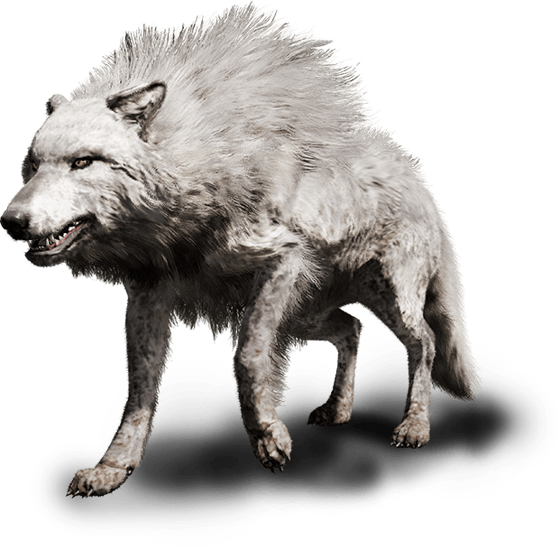

Depois de vários desafios e sufocos ao longo de sua jornada enfim os 4 chegaram ao castelo de Magnus para a batalha que decidiria o futuro deles, os portões se abriram em um clima tenso e sombrio e eles entraram da torre mais alta Magnus e sua fera os observavam silenciosamente quando de repente o lobo de Magnus com um único salto encurralou Hiroki e Scarlett. Na entrada principal do castelo Magnus olhando fixamente para Rinori e disse
-Magnus - Confesso que achei que vocês não chegariam tão longe
- Elinthy – Não nos subestime somos capazes de ir muito além do que você imagina
Magnus logo soltou uma risada com um tom sarcástico
-Magnus – Vamos ver então do que vocês meras crianças são capazes contra mim o mais poderoso de todos
Assim então Rinori e Elinthy partirão pra cima de Magnus
Enquanto isso outra batalha era travada logo atrás deles Hiroki e Scarlett lutavam ferozmente contra a besta de Magnus a onda de magia era tanta que se podia sentir a tensão no ar
Luta Hiroki e Scarlett vs Lobo de Magnus
Aquela besta não se deixava abalar pelos poderes de Hiroki e a ferocidade de Scarlett, ele conseguia se defender e contra atacar quase que ao mesmo tempo além de seu enorme tamanho ele também era bastante forte e ágil.
O lobo atacou rapidamente Hiroki com sua calda mas Hiroki se esquivou contra atacando com seu cetro e assim acertando uma das patas do lobo, que recuou por um momento, entretanto mesmo machucado ele não se via medo em seus olhos e sim um estranho desespero que logo foi notado por Scarlett.
Quando novamente o lobo pulou para atacar Hiroki com um ataque fatal e Hiroki partiu para cima dele com a mesma intenção criando a partir de sua magia uma adaga de gelo cumprida e
afiada, quando incomodada com algo Scarlett ouviu uma voz pedindo ajuda, era o lobo de Magnus.
- Lobo – Por favor jovens guerreiros me ajudem a salvar meu mestre ele esta condenado por causa de seu poder tremendo uma entidade maligna ocupa o corpo dele.
-Scarlett - Como saberemos que você não esta mentindo?
Nesse momento ele parou o ataque que faria conta Hiroki, e Scarlett conseguiu finalmente acreditar no que ele havia dito a ela, entretanto Hiroki continuou indo pra cima dele com a adaga pronto para matá-lo quando de repente Scarlett gritou
-Scarlett – PARE Hiroki!!
Hiroki sem entender direito parou seu ataque e a perguntou o motivo daquilo
-Hiroki – Por que Scarlett?
-Scarlett – Ele não esta tentando nos matar ele simplesmente quer salvar seu mestre e amigo
Ambos então concordaram em ajudar Magnus, Scarlett com a ajuda do lobo e de Hiroki então bolaram um plano para assim conseguirem livrar Magnus deste mal.
Então eles partiram para a batalha que seguia logo a frente.
Luta de Elinthy e Rinori vs Magnus
Mais próximo ao castelo outra batalha seguia acontecendo era Elinthy e Rinori tentando deter Magnus, mas o poder de Magnus era demais pra eles, eles estavam tendo bastante dificuldade, toda sua experiencia não era suficiente para derrotar Magnus, ele tinha um contra ataque para cada técnica que Rinori ou Elinthy usassem contra ele, então eles recuaram quando avistaram os seus companheiros e vindo ao encontro deles.
Scarlett então explicou o que havia acontecido para todos e passou o plano eles, todos concordaram em ajudar então eles foram pra cima de Magnus com sua estratégia de combate, Magnus sem entender o porque de seu amigo estar ao lados deles perguntou:
-Magnus – Então você esta me traindo velho amigo? Ou devo dizer traidor
-Lobo – Não me entenda mal mestre isso é tudo para o seu bem
Magnus então deu uma gargalha sombria e partiu para cima deles
com todo seu poder, com a intenção de paralisar Magnus Hiroki tentou então congelar os pés de Magnus no chão, mas como esperado não funcionou o poder de Magnus ia muito além dos dele e dos outros também. Vendo aquela situação Rinori tentou atacar Magnus por trás criando uma distração e assim abrindo uma brecha em sua defesa para que o lobo conseguisse segura-lo e o imobilizar Elinthy com sua enorme força e experiência de batalha o ajudou a segurar Magnus.
Scarlett então preparou um feitiço de remoção para conseguir extrair a aura ruim de Magnus. Ela conseguia vê-la era uma aura densa e turva e exalava ódio e poder, assim ela e a parte ruim de Magnus travaram um duro cabo de guerra até com a ajuda dos poderes de Rinori ela conseguiu enfim extrair a aura ruim de Magnus para fora de seu corpo o livrando então dessa maldição que o atormentava por anos de sua vida.
Vendo o que havia acontecido Magnus então agradeceu a ajuda dos jovens guerreiros e de seu fiel amigo que o haviam libertado seu corpo e sua alma de todo aquele ódio.
Luta Final
Mas ainda era cedo para comemorar afinal aquela aura maligna ainda estava solta bem ali na frente de todos eles e ela era ainda mais poderosa que Magnus. Todos então se uniram com um único proposito derrotar o mal que havia ali entre eles.
-Magnus – Com a combinação dos meus poderes e os de Hiroki podemos congelar a aura e vocês três finalizam o mandando para um lugar de onde ele nunca mais possa sair.
Todos concordaram com o plano de Magnus e partiram para a ação, Rinori e Elinthy estavam atacando a aura com toda sua força ganhando tempo para que Scarlett pudesse criar uma capsula de selamento.
Quando de repente abriu uma brecha em sua defesa a aura não esperava que Magnus e Hiroki o surpreenderiam e o atacassem por trás o congelando completamente, mas o poder da aura era tremendo e ela estava conseguindo se soltar do gelo.
-Hiroki: Rápido Scarlett não temos mais tempo
Scarlett então com o feitiço pronto selou a aura dentro de um caixão da eternidade,
logo em seguida Magnus o mandou para um lugar de onde ninguém jamais conseguiria escapar.
Então tudo havia voltado ao normal o sol brilhava no céu novamente e como agradecimento Magnus ajudou os jovens guerreiros a voltarem para suas casas e indo junto com eles.
O mal estava contido e por enquanto as ameaças não existiam mais, a vida deles seguia cada dia melhor e mais feliz o mal havia deixado de existir pra sempre ou apenas por um prazo de tempo?
FIM...